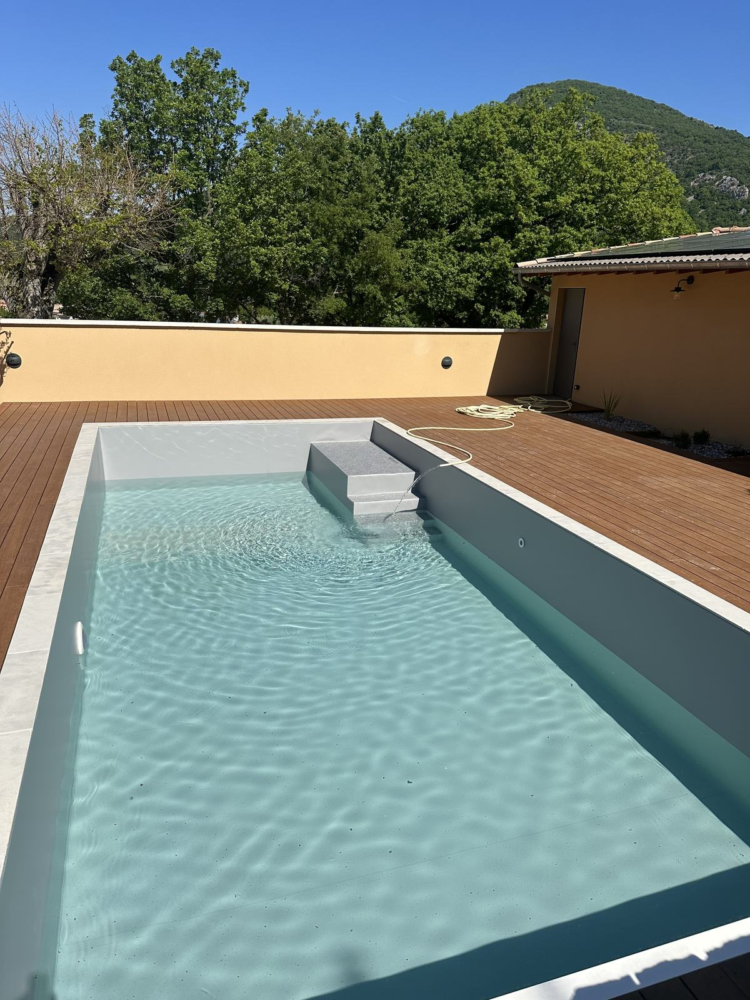

Vallée de la Drôme
Membrane PVC armée à Crest, au pied de la Tour
Crest, sa tour médiévale qui domine la vallée et ses maisons étagées sur la colline : ici, peu de terrains sont parfaitement plats, et beaucoup de piscines ont été construites en terrasse ou adossées à un mur de soutènement. Depuis notre atelier de Montélimar, nous montons à Crest pour poser et rénover des membranes PVC armées soudées sur mesure — le type de revêtement qui s'accommode le mieux de ces bassins atypiques.
Depuis notre atelier de Montélimar
Un chantier à voir
À une demi-heure de Crest : Pont-de-Barret
Plutôt que de vous promettre des références que vous ne pourriez pas vérifier, voici le chantier publié le plus proche de Crest : une piscine habillée d'une membrane PVC armée gris clair à Pont-de-Barret, dans la vallée du Roubion, à environ 25 km au sud de Crest.
Le gris clair est une teinte souvent choisie dans les jardins de la Drôme : elle donne une eau d'un bleu-vert naturel, moins « carte postale » qu'un bleu vif, et s'accorde bien avec la pierre calcaire des margelles. Vous pouvez comparer l'avant et l'après sur notre page réalisations.
- Lieu
- Pont-de-Barret (26)
- Depuis Crest
- ~25 km
- Membrane
- PVC armé gris clair

Sur mesure
Terrain en pente, escalier, forme libre : pourquoi la soudure sur place change tout
Un liner classique est fabriqué en usine à partir des cotes du bassin, puis accroché dans un rail en haut de paroi : il doit tomber juste du premier coup, et il tient par tension. Une membrane PVC armée est découpée et soudée à l'air chaud directement dans le bassin, lé par lé. Chaque lé est fusionné au précédent jusqu'à former une surface continue, collée au support et ajustée au centimètre sur chaque marche et chaque angle.
Sur les bassins que l'on rencontre souvent autour de Crest, cette différence compte :
Bassins en terrasse
Une paroi partiellement hors sol ou adossée à un soutènement : la membrane épouse la géométrie réelle, y compris quand les murs ne sont pas parfaitement d'équerre.
Escaliers et banquettes maçonnés
Chaque marche est habillée et soudée séparément. Les nez de marche peuvent recevoir une finition antidérapante ou un feutre pour le confort.
Formes libres et vieux bassins
Haricot, angles arrondis, ancienne piscine carrelée qui fuit : la membrane armée se pose sur le support existant après préparation, sans démolir.
Le matériau
Liner classique ou PVC armé : les repères
Membranes conformes à la norme Afnor NF T54-804, garantie fabricant 10 ans. Chaque soudure est contrôlée avant la mise en eau. Une pose standard dure en moyenne une journée.
Autour de Crest
Le Crestois et la vallée de la Drôme
Nous intervenons à Crest même et dans les communes qui l'entourent, de la plaine vers le Rhône jusqu'à l'entrée du Diois.
Aouste-sur-Sye & Saillans
En remontant la vallée : Aouste, accolée à Crest, puis Saillans à une quinzaine de kilomètres. Au-delà, vers Die, nous étudions chaque projet.
Allex, Eurre & Grâne
En aval de Crest, vers le Rhône : les villages de la basse vallée de la Drôme, entre plaine agricole et coteaux.
Vallée du Roubion
Au sud, Pont-de-Barret et les villages entre Crest et Dieulefit — un secteur où nous avons déjà posé plusieurs membranes.
Votre projet à Crest
Un bassin atypique à étanchéifier ?
Envoyez-nous quelques photos de votre piscine avec votre demande : nous vous donnons un premier avis, puis nous venons relever les cotes. Devis gratuit sous 24h après la visite.
Questions fréquentes
Vos questions sur un chantier à Crest
Crest est à 45 minutes de Montélimar : vous déplacez-vous vraiment pour une seule piscine ?
Oui. Crest est à environ 38 km de notre atelier par la route, soit trois quarts d'heure : c'est une distance que nous parcourons couramment, pour la visite comme pour le chantier. Une pose standard se fait en une journée, il n'y a donc pas d'aller-retour à multiplier.
Mon terrain est en pente et le bassin est en partie hors sol : le PVC armé convient-il ?
C'est justement un cas où la membrane PVC armée est intéressante. Comme elle est découpée et soudée à l'air chaud sur place, elle s'adapte à un bassin en terrasse, à un mur de soutènement intégré ou à une forme irrégulière, là où un liner fabriqué en usine à partir de cotes doit tomber juste du premier coup. Le diagnostic sur site permet de vérifier la structure avant toute chose.
Intervenez-vous plus loin dans la vallée, vers Saillans ou Die ?
Saillans, à une quinzaine de kilomètres de Crest, fait partie de notre secteur habituel. Pour Die et le Diois, plus en amont dans la vallée, nous étudions les projets au cas par cas : contactez-nous avec la localisation exacte et quelques photos du bassin.
Notre maison est dans le centre ancien, avec un accès étroit : est-ce un problème ?
Rarement. La pose d'une membrane PVC armée ne demande pas d'engin : la membrane arrive en rouleaux et l'outillage de soudure se transporte à la main. Signalez-nous simplement les contraintes d'accès lors du premier échange pour que nous organisions la journée en conséquence.
Villes voisines : Montélimar, notre base · Romans-sur-Isère, à 40 km au nord. Voir aussi toute la Drôme · nos réalisations · la zone d'intervention.